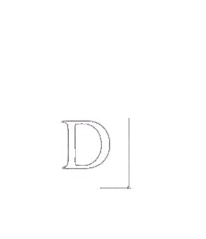
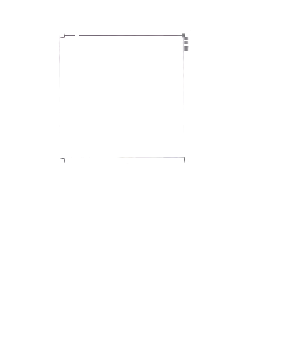
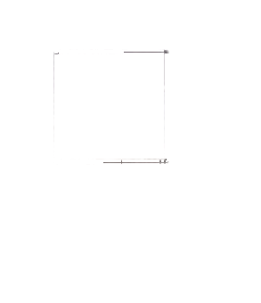
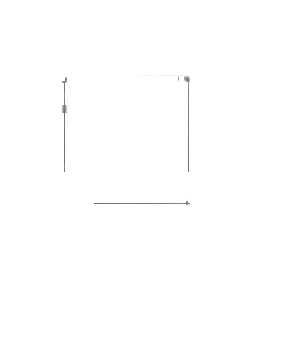
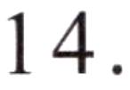
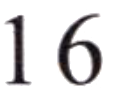

第二部分 Part IIPart IIЧасть II
第14—16题： 匹配句子。Questions 14–16: Match the sentences.Задания 14–16: Соедините предложения.
A坐出租车。
B真好看！
C包子。
D好的， 谢谢！
Nǐ hē shuǐ ma?例如： 你喝水吗？
Would you like some water?Хочешь немного воды?D
你吃什么？
15.
我们怎么去？
这是老师的新电脑。
第三部分 Part IIIPart IIIЧасть III
第17—18题： 选词填空。Questions 17–18: Choose the correct word to fill in each blank.Задания 17–18: Выберите правильное слово, чтобы заполнить пропуск.
A有
B牛奶
C名字
Nǐ jiào shénme例如： 你叫什么 ( C )?
What is your name?Как тебя зовут?17.
037我想买 ( )。